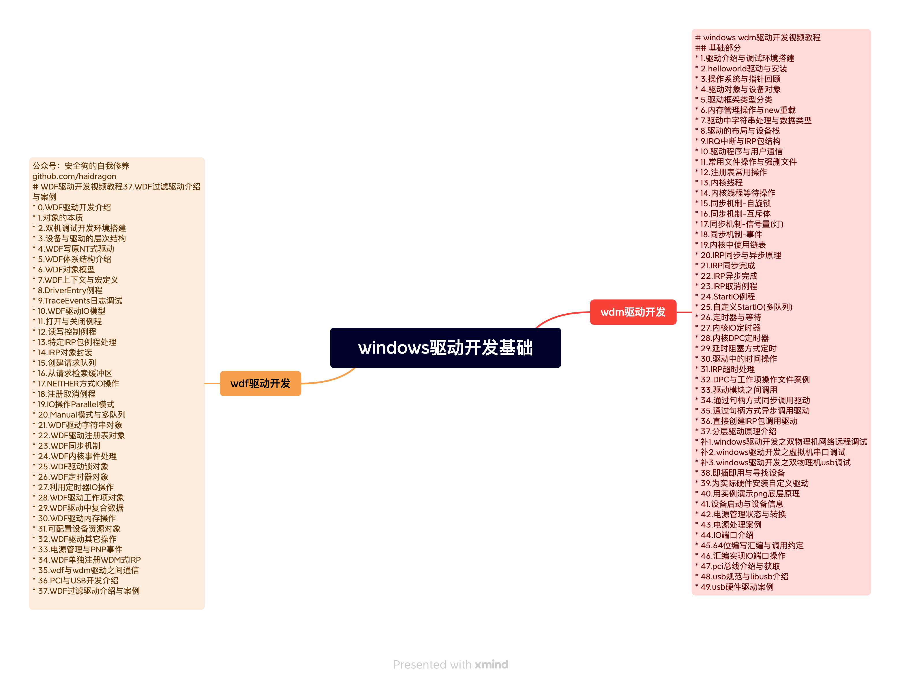
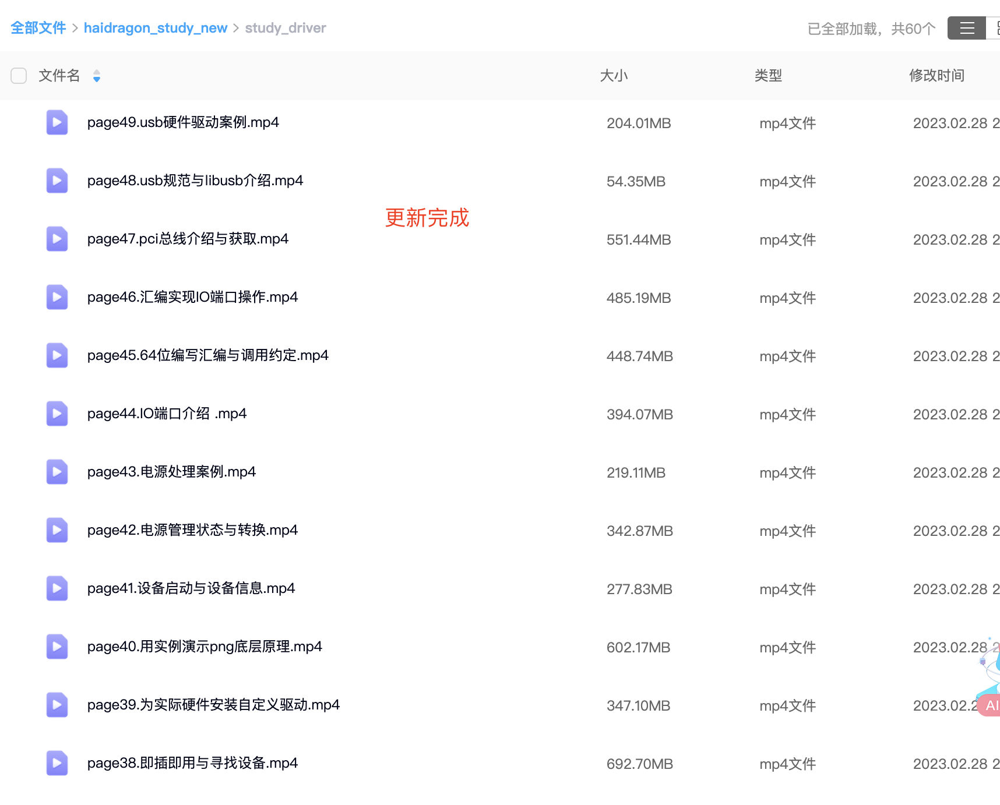

 


148.usb管控介绍
149.usb管控常用方案介绍
150.遍历所有usb设备路径与id
151.遍历所有硬盘(存储)设备路径
152.遍历所有盘符(卷)
153.安全弹出盘符对应的U盘
154.usb设备与盘符映射 应问题
155.usb唯一标识符问题
156.多方案重置usb(restart)
157.usbtreeview逆向分析
158.usb用户层操作api注意事项
159.设备常规状态获取
160.从xp到win11通用性问题
161.驱动层-usb管控设计
162.驱动层-过滤层级问题
163.驱动层-单机版黑白名单问题
164.驱动层-联网版项目设计介绍
165.驱动层-usb管控绕过对抗问题
166.pnpmgr管理器介绍
167.如何找到pnpmgr相关代码
168.pnpmgr代码自举(整个系统第一个设备创建)
169.设备管理器分析所有设备关系树
170.pnpmgr加载注册的所有设备
171.windows内核启动流程
172.usbstor介绍
173.usbstor源码分析
174.什么时候IRP会自下而上
175.usbstor的PNP处理
176.usbstor当栈底(创建子代PDO)
177.usbccgp通用驱动介绍
178.源码调试usbstor与usbccgp
179.为何U盘通过盘符获取不了十六进制的vid与pid
180.解决通过盘符也能获取十六进制的vid与pid
补1.usbdk源码分析-所有设备列表
补2.修复hub复合设备重向定后bug(拔掉设备usbdk设备列表还在)
补3.虚拟总线怎么出pdo的原理分析
补4.某sxf大厂usb透传客户端解决方案逆向分析